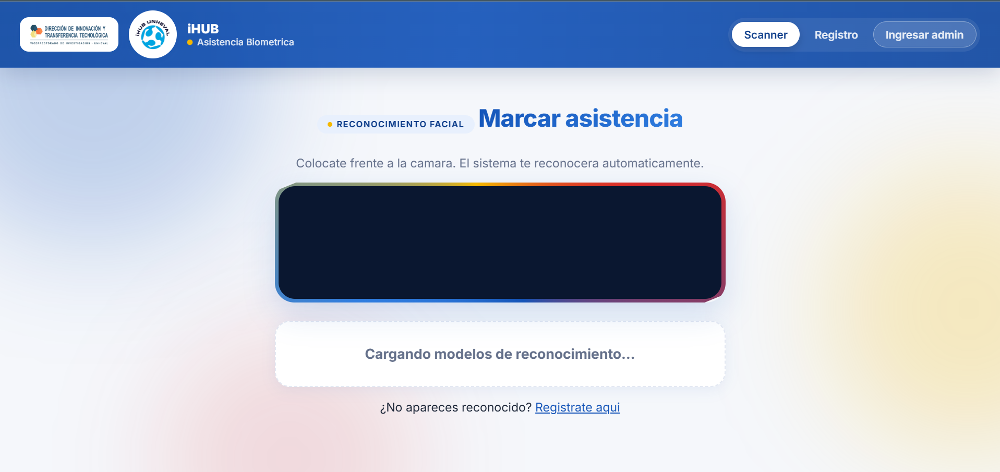

iHUB UNHEVAL, universidad nacional
Asistencia por reconocimiento facial
El centro de innovación de la Universidad Nacional Hermilio Valdizán registraba los ingresos en papel. Saber quién usaba realmente el espacio, y cuándo, significaba transcribir hojas a mano a fin de mes.
Construí un sistema que reconoce a cada persona desde la cámara del navegador. Sin hardware dedicado y sin credenciales que perder. La persona se registra una vez y el panel de administración entrega la asistencia por persona, por día y por periodo.
Resultado: el ingreso toma de 1 a 2 segundos por persona y el reporte mensual sale del sistema en lugar de escribirse a mano.
PythonFlaskReconocimiento facialPostgreSQL